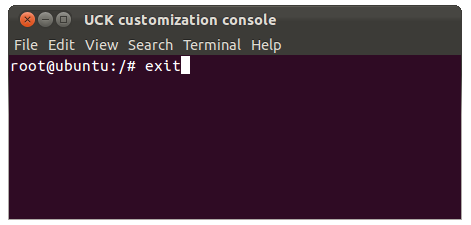

Use Ansible to install applications on a customized Ubuntu Linux platform. Two patterns described, one in which the software applications are deployed over ssh, the other in which the applications are deployed to local host. The fist pattern targetted to administrators for servicing a range of remote machines. The latter pattern allows users to run ansible on their machines and install software on the same machines.
In this lab we have chosen to work with the Ubuntu distribution rather than Linux Mint. The reason for doing so is the ease with which Ubuntu Customization Kit (UCK) may be used to customize a linux installation iso.
We customize the default Ubuntu iso such that the installation is Ansible host-configured. This means, for example, that Ansible may be run on a command machine without the need for any further configuration to any of the host machines.
Finally, we create two sets of playbooks and locate them on a remote repository. One set allows a system administrator to clone the repo and install selected software on a remote set of host machines. The other set facilitates using a machine as both command and host. In other words, Ansible may be used to install software on the same machine on which it itself is running.
Instructions on remastering a Ubuntu LiveCD using Ubuntu Customization Kit (UCK) and commandline tools is available here.
A simpler approach is to use the GUI version, How to Create a Custom Ubuntu Live CD or USB the Easy Way. This tutorial is based on Ubuntu 11.10. The current version of Ubuntu is 14.04 but the changes in the use of UCK are minor. In preparing this lab, UCK was installed as follows:
sudo apt-get install uck
In running UCK one has the option of customizing the LiveCD in the UCK customization console that is automatically launched as one progresses through the UCK wizard and as shown in Figure 1. Executing exit when customization is complete runs UCK to completion.

The following is a list of customizations in preparing administration and student LiveCDs as discussed in the accompanying presentation Intel NUC Configuration: Customized linux installation.
This configuration allows remote host machines to be remotely managed and students to manage their own machines.
Two LiveCDs have been customized, one for administrators, the other for students.
Here is a summary of the steps taken to configure the administrator LiveCD.
/* create administration account */
useradd nucadmin
/* provide password */
passwd nucadmin
/* create folder /home/nucadmin */
mkdir /home/nucadmin
/* add user to sudo group, thus granting admin privilege*/
adduser nucadmin sudo
/* change ownership */
cd home
chown nucadmin:nucadmin nucadmin
/* create standard account */
useradd ictskills
/* provide password */
passwd ictskills
/* create folder /home/ictskills */
mkdir /home/ictskills
/* change ownership */
chown ictskills:ictskills ictskills
These are the required steps. It is important to set permissions appropriately for all newly created entities.
mkdir /home/nucadmin/.ssh
/* create authorized_keys file */
cd /home/nucadmin/.ssh
touch authorized_keys
/* copy public key to authorized_keys file */
/* set permissions: .ssh drwx------ */
chmod go-rwx .ssh
/* authorized_keys -rw------- */
chmod 600 authorized_keys
/* ensure folder and content owned by nucadmin */
chown -R nucadmin:nucadmin .ssh
Modify sudoers file:
sudo visudo
Add to sudoers file:
nucadmin ALL=(ALL:ALL) NOPASSWD: ALL
Official Ansible documentation: Installation.
Ansible ran on OSX Mavericks without any issues arising. Problems were encountered on OSX Yosemite and Ubuntu Linux. In the case of Ubuntu the following additional software was required:
/* Installation Ansible on Ubuntu Linux */
// http://www.saltycrane.com/blog/2010/02/how-install-pip-ubuntu/
apt-get install python-pip python-dev build-essential
pip install --upgrade pip
apt-get install easy_install
sudo -H pip install paramiko PyYAML Jinja2 httplib2 six
Clone Ansible:
git clone git://github.com/ansible/ansible.git --recursive
To run an Ansible playbook:
cd ./ansible
source ./hacking/env-setup
/* change into playbooks folder and run ansible, for example: */
cd ../playbooks
ansible-playbook play.yml
ansible-playbook -i ansible_hosts play.yml
ansible-playbook -i ansible_hosts -l 192.168.61.16
/* Install git */
sudo apt-get install git
/* Unset name and email */
git config --global --unset-all user.email
git config --global --unset-all user.name
Install and configure samba
apt-get update
apt-get install samba
/* provide password */
smbpasswd -a nucadmin
Create a shared folder:
mkdir /home/nucadmin/Shared
chown nucadmin:nucadmin Shared
Backup /etc/samba/smb.conf
[Shared]
path = /home/nucadmin/Shared
available = yes
valid users = nucadmin
read only = no
browseable = yes
public = yes
Official glossary here.
Host: the remote machine Control machine: the machine on which ansible is installed and the playbooks run
The file group_vars/all.yml should be configured for your particular command machine.
Official documentation here.
Here is the official download documentation
git clone git://github.com/ansible/ansible.git --recursive
cd ./ansible
source ./hacking/env-setup
from the folder ansible, (ansible is current directory) cd to folder ansible-playbook-01.
then run the playbook:
ansible-playbook -i ansible_hosts play.yml
File ansible_hosts must be populated. For example:
[allnucs]
192.168.61.29 ansible_ssh_private_key_file={{KEYS_PATH}}/nuc_rsa ansible_ssh_user=admin
192.168.61.16 ansible_ssh_private_key_file={{KEYS_PATH}}/nuc_rsa ansible_ssh_user=admin
Example, run against all hosts listed in your file ansible_hosts:
ansible-playbook -i ansible_hosts update-all-nucs.yml
Example, run against single host (which must be also listed in ansible_hosts)
ansible-playbook -i ansible_hosts -l 192.168.61.16 update-all-nucs.yml*
Successful run of playbook predicated on all hosts properly configured. For example, in the case of a user named admin on a particular host:
// .ssh drwx------
sudo chmod go-rwx .ssh
// authorized_keys -rw-------
sudo chmod 600 authorized_keys
Error 1 You may encounter the following error when certain changes occur on host
// attempt ssh into host
ssh -i ~/.ssh/nuc_rsa admin@192.168.61.16
// 1st attempt to ssh into host or after other changes e.g. o.s. reinstall.
Last login: Mon Sep 28 14:56:24 on ttys002
$ ssh -i ~/.ssh/nuc_rsa ictskills@192.168.61.29
@@@@@@@@@@@@@@@@@@@@@@@@@@@@@@@@@@@@@@@@@@@@@@@@@@@@@@@@@@@
@ WARNING: REMOTE HOST IDENTIFICATION HAS CHANGED! @
@@@@@@@@@@@@@@@@@@@@@@@@@@@@@@@@@@@@@@@@@@@@@@@@@@@@@@@@@@@
IT IS POSSIBLE THAT SOMEONE IS DOING SOMETHING NASTY!
Someone could be eavesdropping on you right now (man-in-the-middle attack)!
It is also possible that a host key has just been changed.
The fingerprint for the RSA key sent by the remote host is
bb:8f:69:c2:e9:43:76:a8:3c:c7:e1:60:1f:3d:22:bf.
Please contact your system administrator.
Add correct host key in /Users/john/.ssh/known_hosts to get rid of this message.
Offending RSA key in /Users/john/.ssh/known_hosts:8
RSA host key for 192.168.61.29 has changed and you have requested strict checking.
Host key verification failed.
This fixes problem:
ssh-keygen -R 192.168.61.29
// Host 192.168.61.29 found: line 8 type RSA
.ssh/known_hosts updated.
Original contents retained as /Users/john/.ssh/known_hosts.old
Now check it's possible to log in without password:
$ ssh -i nuc_rsa ictskills@192.168.61.29
The authenticity of host '192.168.61.29 (192.168.61.29)' can't be established.
RSA key fingerprint is bb:8f:69:c2:e9:43:76:a8:3c:c7:e1:60:1f:3d:22:bf.
Are you sure you want to continue connecting (yes/no)? yes
Warning: Permanently added '192.168.61.29' (RSA) to the list of known hosts.
Welcome to Linux Mint 17.2 Rafaela (GNU/Linux 3.16.0-38-generic x86_64)
Success at last, t.g.almighty, success at last:
Welcome to Linux Mint
* Documentation: http://www.linuxmint.com
Or something like that, depending on platform used.
Error 2 The following error has also been encountered on first attempting to run a playbook in the following environments:
ansible-playbook -i ansible_hosts update-pwd-gorilla.yml
Traceback (most recent call last):
File "/home/admin/ansible/bin/ansible-playbook", line 40, in <module>
from ansible.utils.display import Display
File "/home/admin/ansible/lib/ansible/utils/display.py", line 35, in <module>
from ansible import constants as C
File "/home/admin/ansible/lib/ansible/constants.py", line 30, in <module>
from ansible.parsing.splitter import unquote
File "/home/admin/ansible/lib/ansible/parsing/__init__.py", line 28, in <module>
from yaml import load, YAMLError
ImportError: No module named yaml
In both casese this problem was solved as follows:
// Mac
sudo easy_install pip
sudo pip install paramiko PyYAML Jinja2 httplib2 six
// Linux
sudo apt-get install python-setuptools
sudo apt-get install easy_install
sudo -H pip install paramiko PyYAML Jinja2 httplib2 six